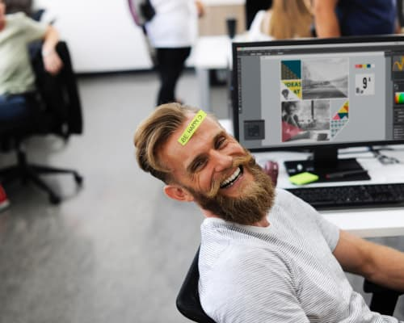

Отдых: как не превратиться в «загнанную лошадь»
Чтобы хорошо отдохнуть, над этим надо хорошо потрудиться
Кащеев Е.
При слове «тайм-менеджмент» у многих возникает ассоциация с унылыми серыми буднями, полными работы, стрессов и проблем. Как можно работать, записывая все в блокнот, считая каждую минуту и следуя графику. А как же свободное время? Личное пространство? Отдых, в конце концов? Это распространенное заблуждение! На самом деле теория ТАЙМ-МЕНЕДЖМЕНТA уделяет огромное внимание правильной и эффективной организации отдыха. Потому что никто не вечен, батарейки садятся у всех, да и ресурсы нервной системы не безграничны. Про опасности синдрома «Кароси» ты уже читал в предыдущих выпусках. Следовательно, для того чтобы качественно и эффективно работать, нужно уметь хорошо отдыхать.
Так каким же должен быть эффективный отдых?
Наука тайм-менеджмента это не столько про количество времени, сколько про его качество. Можно тратить меньше рабочих часов, а выполнять гораздо больший объем работ. Точно так же качество отдыха зависит не от того, сколько часов ты на него потратил, а от того, каким был этот отдых. Я предложу ряд советов, которые, надеюсь, помогут вам сделать свой отдых действительно эффективным.
-
Ритмичный отдых, т.е. регулярными отрезками через определенные промежутки времени в течение рабочего дня
Обычно он складывается стихийно. Отвлекся на несколько минут на комментарии в соцсетях, позвонил знакомый – поболтал с ним, выпил чашечку кофе, зашел коллега из другого отдела обсудить последние новости. Такой несистемный отдых чреват двумя крайностями: случай отдохнуть может так и не представиться, и накопившаяся усталость будет снижать твою работоспособность. Либо наоборот, такие перерывы будут занимать тебя полностью и бесконтрольно, что в итоге приведет к увеличению временных затрат.
Все просто: используй небольшой запланированный отдых через строго определенные промежутки времени. Вспомни школу и вуз: урок - 45 минут, «пара» - 1,5 часа. Перемена 10 минут. Эти цифры взяты не с потолка. Преподаватели, врачи и психологи рекомендуют отдыхать каждые полтора часа по 10-15 минут. Этих же рекомендаций придерживаются бизнес-тренеры при проведении аудиторных занятий.
Как бы ни был загружен ваш рабочий день, какой бы аврал ни царил в офисе – найдите эти 10 минут каждые 1,5 часа, работа без них крайне неэффективна.
-
«Максимальное переключение» в отдыхе
Владимир Маяковский, который был одним из идеологов и популяризаторов советского движения научной организации труда, выразил принцип максимального переключения в простом лозунге:
«Товарищ, запомни правило простое:
Владимир Маяковский Еще цитаты автора
Работаешь — сидя, Отдыхай — стоя»!Если вы весь день проводите в кресле и в отведенные для отдыха 10-15 минут все так же сидите за тем же компьютером и раскладываете пасьянс или читаете информацию с сайта — вы практически не отдыхаете.
На просторах Интернет мы собрали пять доступных каждому правил на каждый день, которые улучшают качество жизни офисного сотрудника и делают его труд продуктивным:
- Утром выполнять зарядку 20–30 минут. Даже несложная зарядка тонизирует мышцы тела и пробуждает нервную систему, дает мощный заряд бодрости на целый день.
- Если офис находится недалеко, не добираться до него на транспорте, а пройтись пешком. Пешие прогулки улучшают кровообращение, а ещё помогают сжигать калории
- Если офис находится на высоком этаже, не ехать на лифте, а пройти наверх хотя бы несколько пролетов. Это отличная возможность потренировать сердце и лёгкие :).
- Не коротать обеденное время в кафетерии, а пройтись по улицам. Смена обстановки и окружения помогает сместить точку внимания и приводит к новым решениям.
- Перед сном полезно делать спокойные физические упражнения. Тело успевает расслабиться и подустать, благодаря чему засыпание пройдет легко. Простые движения помогают снять усталость с позвоночника и мышц организма. Оптимально проводить их за час до сна.
-
Дайте себе моральное право на отдых в течение дня
Если уж лениться, то на 100%, не пытаясь делать в это время что-то еще, думать, решать проблемы и т.п. Сознательно принимай решение:
«Хочу лениться - и буду это делать»
Без колебаний и угрызений совести. Распространенная ошибка – во время работы думать об отдыхе, а во время отдыха – о работе. В такой ситуации у тебя не получится ни нормально поработать, ни нормально отдохнуть, а растущее чувство вины только усугубит ситуацию.Часто это приводит к возникновению «лени второго порядка», когда вместо того чтобы готовить важный отчет, ты начинаешь делать более приятную рабочую ерунду: перебирать папки, наводить порядок в ящиках, собирать информацию в сети по вопросам, которые не являются важными и срочными. Такой самообман, т.е. нельзя сказать, что я не работаю, но к моим целям меня это совсем не приближает.
-
Эффективный сон
Тяжело встаешь по утрам? Засыпаешь на ходу? Ты не одинок! Сон – это важнейший инструмент отдыха и восстановления. Но всегда ли мы грамотно его организуем? Хорошие новости: даже не увеличивая количество времени на сон, можно существенно повысить его качество. Фиксированное время отхода ко сну и пробуждения. Помнишь, мы говорили про привычки? Если у тебя вырабатывается привычка – все становится делать проще. В том числе заснуть и проснуться. «Привычки - это как суперсила. Они могут придать нам дополнительной могучести и помочь в самых разных делах». Сделай следующее:
- Проветри помещение, в котором спишь, и старайся не есть за несколько часов до сна. Если желудок продолжит работу, пока отдыхает остальное тело – отдых будет неполноценным.
- Заведи спокойный ритуал для отхода ко сну. Например, в последние полчаса-час перед сном – спокойное чтение, прогулка, музыка, легкие гимнастические упражнения и т.п. Занятие может быть каким угодно, главное, чтобы оно помогло вам разгрузить мозг от дневных забот, переключиться в более медленный ритм.
- Наш сон состоит из нескольких циклов смены «быстрого» и «медленного» сна. Длительность одного цикла у разных людей немного отличается, но в среднем составляет 1 час 30 минут. Так вот, если время сна будет кратно продолжительности цикла – пробуждение будет легким. Для себя я давно установил, что спать 7,5 часов – гораздо лучше, чем 8.
-
Штирлиц и биоритмы
Твоя работоспособность в течение дня имеет два подъема и два спада (у «жаворонков» выше первый подъем, у «сов» - второй, приходящийся на вечер). Нетрудно заметить, что один из спадов приходится как раз на послеобеденное время.
Латиноамериканцы вообще не считают нужным работать в это время и устраивают 3-х часовую сиесту – обязательный сон в послеобеденную жару. Мы себе такой роскоши позволить не можем, однако небольшой 15-минутный послеобеденный сон окупится гораздо более высокой послеобеденной работоспособностью. Вспомните, как главный герой «17 мгновений весны» восстанавливается в автомобиле в конце сериала. Долгий сон выбивает из рабочей колеи, а за 15 минут мозг хорошо освежается, но не успевает заснуть слишком уж сильно. Практика послеобеденного сна давно стала нормой в западных компаниях, и вслед за Google, Apple и AliExpress российские Сбербанк, Яндекс, Авито и РусГидро уже открыли в своих офисах специальные комнаты сна для сотрудников. Попробуй вздремнуть 15 минут в автомобиле или прямо за рабочим столом – следующие 4 часа рабочего дня будут очень продуктивными.